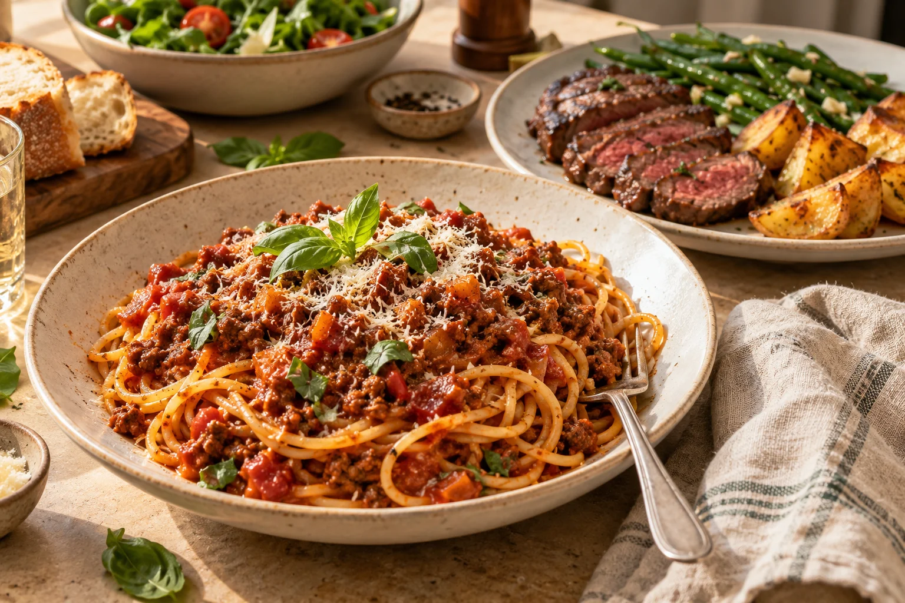

MADE FOR YOUR EVERYDAY TABLEFood you look
Food you look
forward to.
Proper family favourites. Instructions that make sense.
A week of good food, with a little less guesswork.
✓ Breakfast to dinner✓ Your family, your portions

A happier table.Illustrative image
Pick the meals. Make them yours. Cook with confidence.